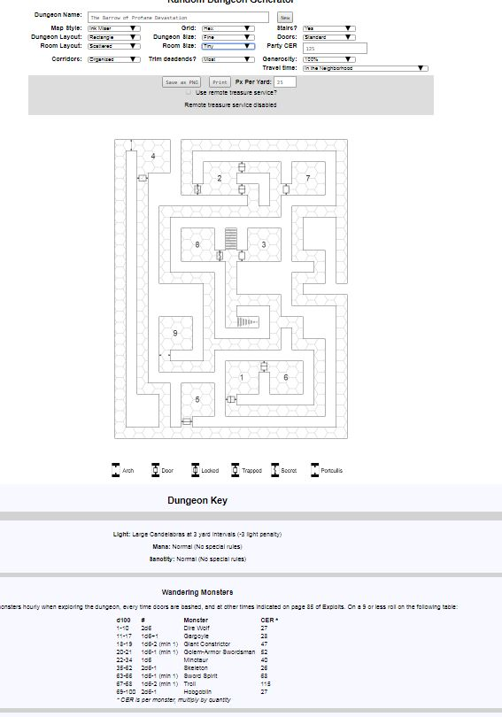

Dungeon Generator Update

We've got a bevy of new features now available in the master version of the generator and more to come that I just had to tell you about. Our code wizards have worked hard to add the following new features:
Resolution adjustments. The latest version lets you change the resolution to fit your VTT needs. I suggest you generate a dungeon you are happy with, then adjust resolution. Doors. Our doors can now be trapped, stuck, locked or hidden, or all four. Check room descriptions for detailed door descriptions as well. Some doors will be stone, others simple wood, still others ironbound wood. More to come on this in future updates. Mana level and Sanctity level. This happens both on a per dungeon and per room basis. I've got players trudging around glumly in a low mana dungeon as we speak! Wandering Monsters. The generator now kicks out a table of wandering monsters based on the monsters already present in the dungeon. It uses a percentile system for now, but we'll be re-jiggering it to do all d6 in the future. Generosity. I've felt for a while that generated treasure was a bit low, and each campaign can differ, so this is a tool to kick it up (or down) a notch. Travel time: this is a new feature we're still testing out, but I thought you guys would like to see what we're chewing on. The assumption is all the dungeons near here have been looted before and that more remote dungeons have richer loot. I'll do a separate blog post discussing assumptions and adjustments soon. We've still got more features coming up soon like quests, rumors, debris, spell lists and more! Don't remember where to get the latest version? Check out our tutorial here! What features would you still like to see that we haven't discussed yet?